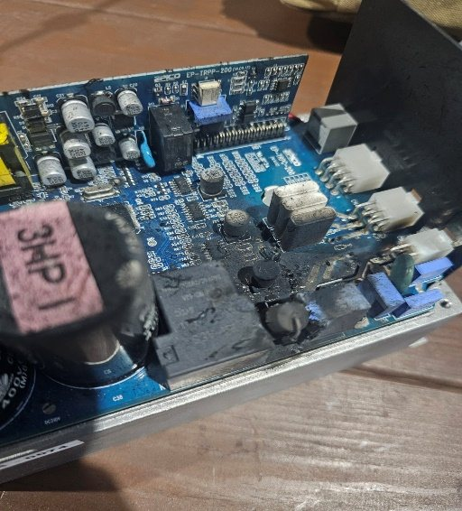
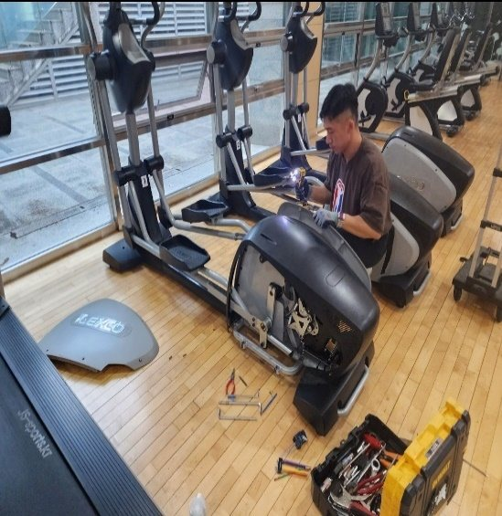
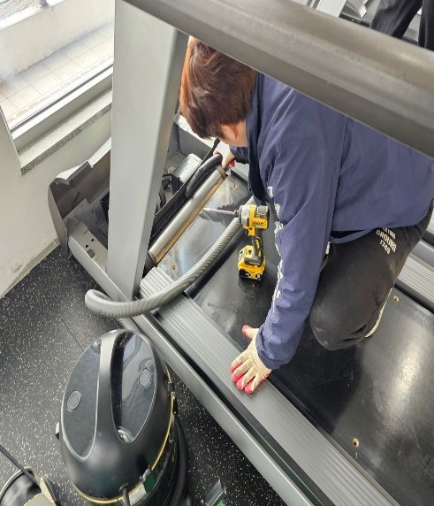
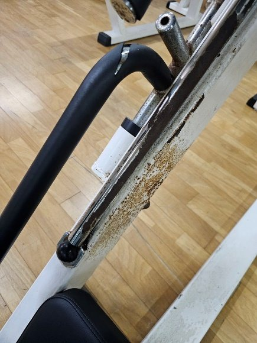
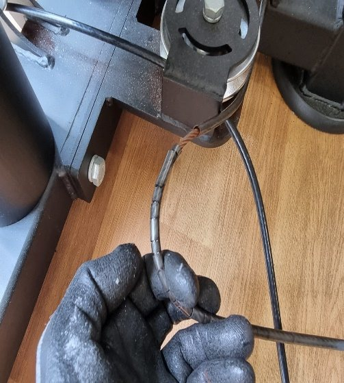
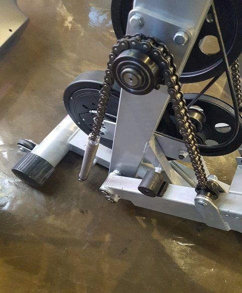
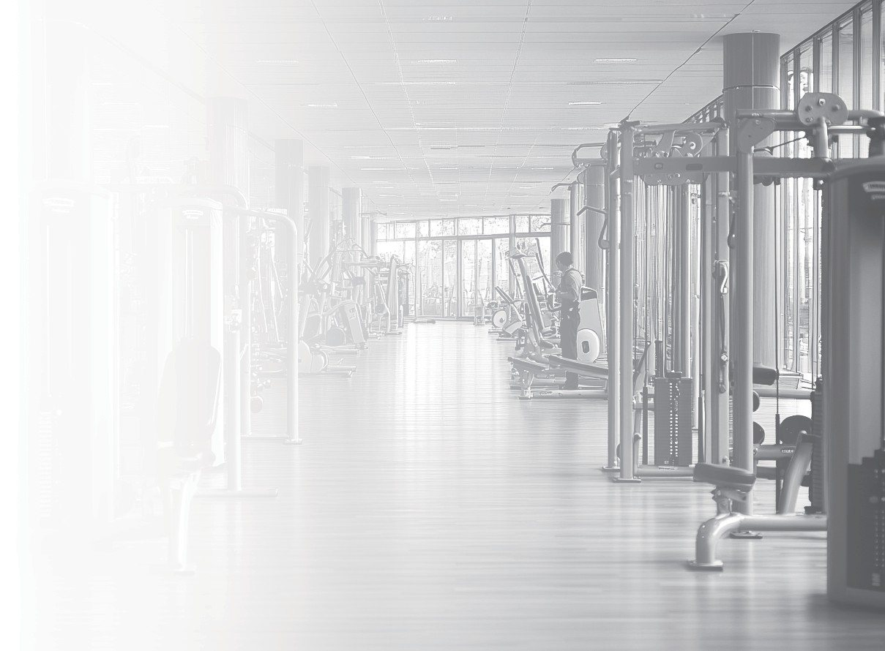

2가지 타입의 체계화된 정기점검 프로그램으로 안전사고에 대비하세요
JS스포츠는 기구 및 시설관리 정기점검 프로그램으로 안전사고를 대비합니다.
위탁운영을 하여 전문인력이 상주하지 않는 체육시설의 경우, 자체 관리인력으로 기구 A/S를 하거나 사설 A/S 인력을 요청하여 해결하는 경우가 대부분입니다. 하지만 이 경우 정확한 A/S와 신속한 처리가 어려운 단점이 생깁니다.
이러한 문제점을 사전에 예방하고자 JS스포츠는 연간 계약을 맺고 A타입·B타입 프로그램에 맞춰 시설물 정기점검 서비스를 진행합니다. 점검기간 외에 발생하는 A/S도 1~2일 안에 빠르게 방문하여 진행 가능합니다.
월 정기점검 수수료를 지불하고, 기구 A/S 비용은 발생 시 별도로 청구되는 기본형 프로그램입니다.
정기점검 계약기간 동안 체육공동시설에서 발생하는 모든 A/S 비용을 JS스포츠가 책임지는 안심형 프로그램입니다.
※ 납품되어 있는 기구 브랜드 및 연식에 따라 견적이 상이합니다. 정확한 견적은 현장 방문 후 안내드립니다.
유산소기구(런닝머신 및 싸이클)의 작동여부 및 전장류 점검. 주기적으로 관리가 안 된 런닝머신과 싸이클은 인버터류(전장부) 및 먼지와 오염으로 오작동 발생 시 전원 꺼짐, 순간 멈춤으로 인한 낙하사고, 전원부 과부하로 인한 화재 발생의 위험이 있습니다. 정기적인 오일류 도포와 청소작업으로 안전사고 예방 및 고장률 최소화를 목적으로 합니다.
매월 1~2회 정기점검 방문

인버터 · 제어보드 등 전장부 점검과 과부하 예방

내부 먼지 · 오염 제거로 오작동과 화재 위험 차단

벨트 마모 확인과 정기적인 오일 도포로 수명 연장
웨이트기구의 작동여부 및 전장류 점검. 운동기구는 항상 안전사고에 대비하여 각종 손잡이류와 와이어 상태를 주기적으로 점검해야 합니다. 미관상 보기 안 좋은 레자 부분도 정기적으로 교체해 주어야 합니다.
매월 1~2회 정기점검 방문

와이어 피복 손상 · 롤러 마모 점검으로 끊어짐 사고 예방

레자 · 패드 · 그립 고무 상태 확인 및 교체

각종 베어링 · 체인 · 작동부 윤활 상태 점검
전문인력이 주기적으로 관리하는 시설 점검. 체계적인 관리를 위해 점검표를 작성해 기구들의 수명을 관리하고
사용자들의 편의와 안전을 위해 최선을 다합니다.

매 방문 시 점검차트로 그날 점검내용과 추후 필요한 부분을 작성합니다. 시설관리는 회원들의 안전 및 기구들의 수명과 직결되는 부분이기에 주기적인 안전점검과 관리가 필요합니다. JS스포츠는 전문인력의 주기적인 관리로 사용자들의 안전을 최우선시합니다.
관리 시설마다 다른 브랜드의 운동기구 및 유산소기구가 설치되어 있습니다. JS스포츠는 기구 본사와 달리 A/S 진행 시 원스톱 시스템으로 어떠한 브랜드(국산 · 수입)도 본사 대비 빠르고 저렴하게 A/S 진행이 가능합니다.
전문인력이 직접 방문하여 공간에 맞는 컨설팅과 견적을 상담해 드립니다.